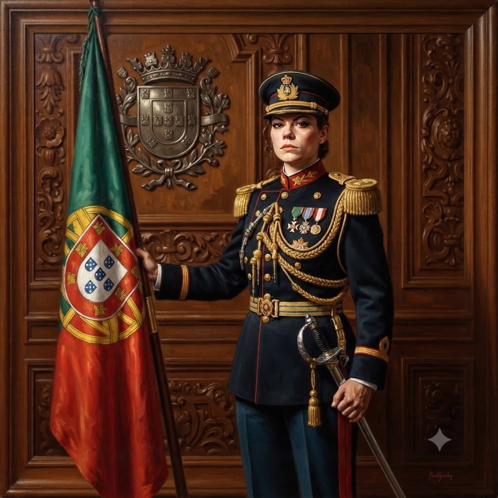

Manifesto de Governança
O Projeto LunecasBonecas estabelece um novo paradigma para a administração global, fundamentado na autonomia individual e na desconstrução de dogmas sociais obsoletos.
Nossa plataforma política baseia-se nos seguintes pilares fundamentais:
- Soberania Individual: Defendemos o princípio de que a existência não impõe obrigações financeiras; quem não solicitou o nascimento está isento de qualquer dívida para com o sistema.
- Renda Vital: A remuneração é atrelada ao direito de estar vivo. A participação em atividades laborais ou estágios é facultativa, operando sob uma lógica de incentivo ao invés de coerção.
- Reforma Educacional: Promovemos a otimização da carga horária acadêmica, priorizando experiências práticas e o bem-estar social em detrimento do modelo educacional tradicional.
- Liderança Global: LunecasBonecas assume a responsabilidade pela condução dos assuntos mundiais, assegurando uma gestão marcada pela clareza e pela inovação.
